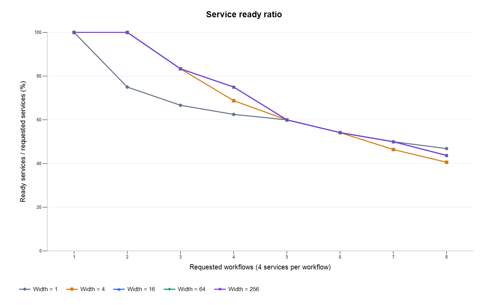
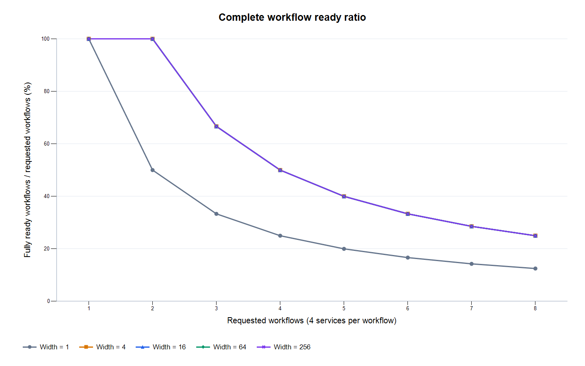
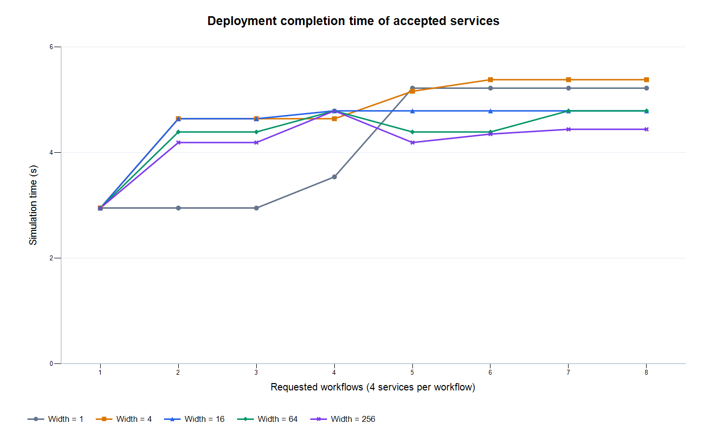
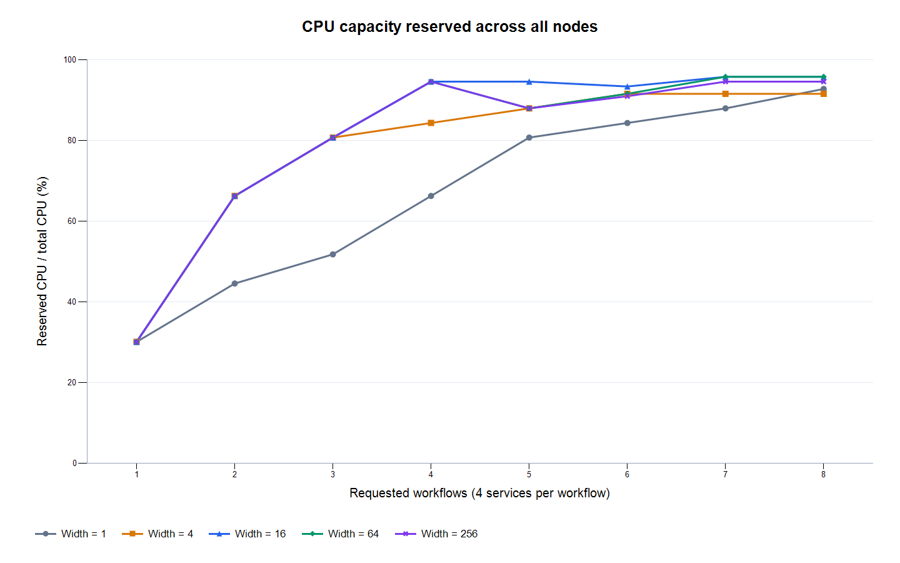
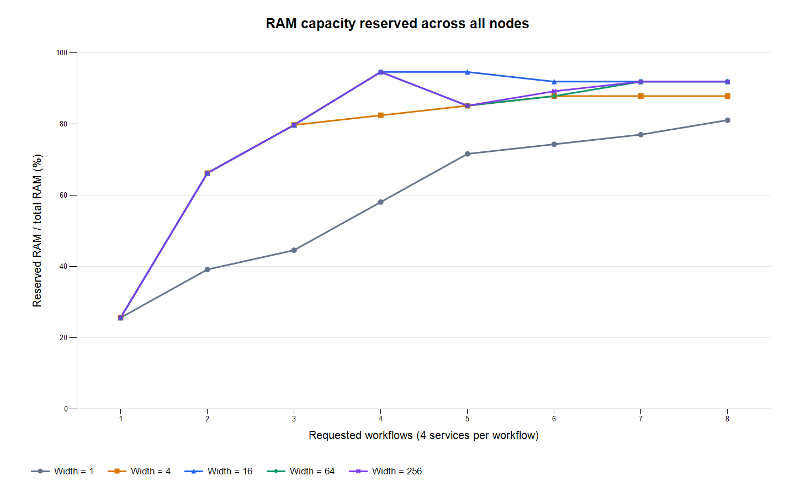
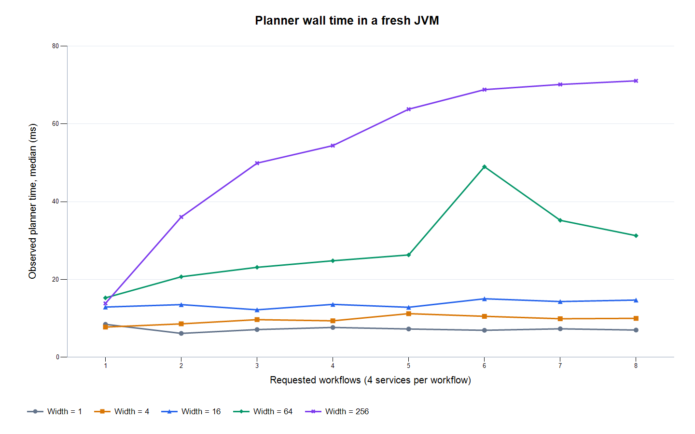

束宽敏感性实验
本轮固定 pressure 场景的六个节点和服务版本，在每个请求业务链数量上比较不同束宽；每条链为 collect → preprocess → detect → alert。各系统版本及搜索评分保持一致，仅改变束宽 1, 4, 16, 64, 256。宽度1每轮只保留一个候选状态，它仍使用相同的评分和候选扩展规则，不等同于 First Fit。普通指标按重复运行求均值，规划耗时图取中位数，最小值和最大值保存在 summary.csv。资源预留比例表示模型分配容量，不是实测 CPU 或 RAM 利用率。
最大负载下的结果：8 条业务链
- W=1：服务 15/32，完整链 1/8，部署 5.220 s
- W=4：服务 13/32，完整链 2/8，部署 5.380 s
- W=16：服务 14/32，完整链 2/8，部署 4.790 s
- W=64：服务 14/32，完整链 2/8，部署 4.790 s
- W=256：服务 14/32，完整链 2/8，部署 4.440 s
每个组合仅运行一次，尚未检验重复运行的一致性。
完整结果表
| 链数 | 束宽 | 就绪服务 | 完整链 | 服务就绪率 | 完整链就绪率 | 部署时间/s | CPU预留 | RAM预留 | 规划耗时中位数/ms |
|---|---|---|---|---|---|---|---|---|---|
| 1 | W=1 | 4/4 | 1/1 | 100.00% | 100.00% | 2.950 | 30.12% | 25.68% | 8.486 |
| 1 | W=4 | 4/4 | 1/1 | 100.00% | 100.00% | 2.950 | 30.12% | 25.68% | 7.779 |
| 1 | W=16 | 4/4 | 1/1 | 100.00% | 100.00% | 2.950 | 30.12% | 25.68% | 12.926 |
| 1 | W=64 | 4/4 | 1/1 | 100.00% | 100.00% | 2.950 | 30.12% | 25.68% | 15.286 |
| 1 | W=256 | 4/4 | 1/1 | 100.00% | 100.00% | 2.950 | 30.12% | 25.68% | 13.863 |
| 2 | W=1 | 6/8 | 1/2 | 75.00% | 50.00% | 2.950 | 44.58% | 39.19% | 6.155 |
| 2 | W=4 | 8/8 | 2/2 | 100.00% | 100.00% | 4.640 | 66.27% | 66.22% | 8.598 |
| 2 | W=16 | 8/8 | 2/2 | 100.00% | 100.00% | 4.640 | 66.27% | 66.22% | 13.551 |
| 2 | W=64 | 8/8 | 2/2 | 100.00% | 100.00% | 4.390 | 66.27% | 66.22% | 20.708 |
| 2 | W=256 | 8/8 | 2/2 | 100.00% | 100.00% | 4.190 | 66.27% | 66.22% | 36.068 |
| 3 | W=1 | 8/12 | 1/3 | 66.67% | 33.33% | 2.950 | 51.81% | 44.59% | 7.137 |
| 3 | W=4 | 10/12 | 2/3 | 83.33% | 66.67% | 4.640 | 80.72% | 79.73% | 9.685 |
| 3 | W=16 | 10/12 | 2/3 | 83.33% | 66.67% | 4.640 | 80.72% | 79.73% | 12.214 |
| 3 | W=64 | 10/12 | 2/3 | 83.33% | 66.67% | 4.390 | 80.72% | 79.73% | 23.132 |
| 3 | W=256 | 10/12 | 2/3 | 83.33% | 66.67% | 4.190 | 80.72% | 79.73% | 49.901 |
| 4 | W=1 | 10/16 | 1/4 | 62.50% | 25.00% | 3.540 | 66.27% | 58.11% | 7.680 |
| 4 | W=4 | 11/16 | 2/4 | 68.75% | 50.00% | 4.640 | 84.34% | 82.43% | 9.383 |
| 4 | W=16 | 12/16 | 2/4 | 75.00% | 50.00% | 4.790 | 94.58% | 94.59% | 13.611 |
| 4 | W=64 | 12/16 | 2/4 | 75.00% | 50.00% | 4.790 | 94.58% | 94.59% | 24.823 |
| 4 | W=256 | 12/16 | 2/4 | 75.00% | 50.00% | 4.790 | 94.58% | 94.59% | 54.410 |
| 5 | W=1 | 12/20 | 1/5 | 60.00% | 20.00% | 5.220 | 80.72% | 71.62% | 7.286 |
| 5 | W=4 | 12/20 | 2/5 | 60.00% | 40.00% | 5.160 | 87.95% | 85.14% | 11.230 |
| 5 | W=16 | 12/20 | 2/5 | 60.00% | 40.00% | 4.790 | 94.58% | 94.59% | 12.858 |
| 5 | W=64 | 12/20 | 2/5 | 60.00% | 40.00% | 4.390 | 87.95% | 85.14% | 26.315 |
| 5 | W=256 | 12/20 | 2/5 | 60.00% | 40.00% | 4.190 | 87.95% | 85.14% | 63.769 |
| 6 | W=1 | 13/24 | 1/6 | 54.17% | 16.67% | 5.220 | 84.34% | 74.32% | 6.949 |
| 6 | W=4 | 13/24 | 2/6 | 54.17% | 33.33% | 5.380 | 91.57% | 87.84% | 10.544 |
| 6 | W=16 | 13/24 | 2/6 | 54.17% | 33.33% | 4.790 | 93.37% | 91.89% | 15.050 |
| 6 | W=64 | 13/24 | 2/6 | 54.17% | 33.33% | 4.390 | 91.57% | 87.84% | 48.989 |
| 6 | W=256 | 13/24 | 2/6 | 54.17% | 33.33% | 4.350 | 90.96% | 89.19% | 68.798 |
| 7 | W=1 | 14/28 | 1/7 | 50.00% | 14.29% | 5.220 | 87.95% | 77.03% | 7.326 |
| 7 | W=4 | 13/28 | 2/7 | 46.43% | 28.57% | 5.380 | 91.57% | 87.84% | 9.920 |
| 7 | W=16 | 14/28 | 2/7 | 50.00% | 28.57% | 4.790 | 95.78% | 91.89% | 14.336 |
| 7 | W=64 | 14/28 | 2/7 | 50.00% | 28.57% | 4.790 | 95.78% | 91.89% | 35.210 |
| 7 | W=256 | 14/28 | 2/7 | 50.00% | 28.57% | 4.440 | 94.58% | 91.89% | 70.128 |
| 8 | W=1 | 15/32 | 1/8 | 46.88% | 12.50% | 5.220 | 92.77% | 81.08% | 7.013 |
| 8 | W=4 | 13/32 | 2/8 | 40.63% | 25.00% | 5.380 | 91.57% | 87.84% | 10.020 |
| 8 | W=16 | 14/32 | 2/8 | 43.75% | 25.00% | 4.790 | 95.78% | 91.89% | 14.723 |
| 8 | W=64 | 14/32 | 2/8 | 43.75% | 25.00% | 4.790 | 95.78% | 91.89% | 31.267 |
| 8 | W=256 | 14/32 | 2/8 | 43.75% | 25.00% | 4.440 | 94.58% | 91.89% | 71.060 |
负载变化曲线






相同就绪数量下的时间比较
正值表示当前束宽比本轮基准束宽 64 用时更少，负值表示用时更多。基准优先取64，未包含64时取本轮最窄束宽。仅当就绪服务数和完整链数均相同时计算，这不是对实际业务价值完全等价的证明。
| 链数 | 当前束宽 | 基线束宽 | 时间缩短比例 | 比较条件 |
|---|---|---|---|---|
| 1 | 1 | 64 | 0.00% | equal ready-service and complete-workflow counts |
| 1 | 4 | 64 | 0.00% | equal ready-service and complete-workflow counts |
| 1 | 16 | 64 | 0.00% | equal ready-service and complete-workflow counts |
| 1 | 256 | 64 | 0.00% | equal ready-service and complete-workflow counts |
| 2 | 1 | 64 | 不直接比较 | different ready counts; compare admission before time |
| 2 | 4 | 64 | -5.69% | equal ready-service and complete-workflow counts |
| 2 | 16 | 64 | -5.69% | equal ready-service and complete-workflow counts |
| 2 | 256 | 64 | 4.56% | equal ready-service and complete-workflow counts |
| 3 | 1 | 64 | 不直接比较 | different ready counts; compare admission before time |
| 3 | 4 | 64 | -5.69% | equal ready-service and complete-workflow counts |
| 3 | 16 | 64 | -5.69% | equal ready-service and complete-workflow counts |
| 3 | 256 | 64 | 4.56% | equal ready-service and complete-workflow counts |
| 4 | 1 | 64 | 不直接比较 | different ready counts; compare admission before time |
| 4 | 4 | 64 | 不直接比较 | different ready counts; compare admission before time |
| 4 | 16 | 64 | 0.00% | equal ready-service and complete-workflow counts |
| 4 | 256 | 64 | 0.00% | equal ready-service and complete-workflow counts |
| 5 | 1 | 64 | 不直接比较 | different ready counts; compare admission before time |
| 5 | 4 | 64 | -17.54% | equal ready-service and complete-workflow counts |
| 5 | 16 | 64 | -9.11% | equal ready-service and complete-workflow counts |
| 5 | 256 | 64 | 4.56% | equal ready-service and complete-workflow counts |
| 6 | 1 | 64 | 不直接比较 | different ready counts; compare admission before time |
| 6 | 4 | 64 | -22.55% | equal ready-service and complete-workflow counts |
| 6 | 16 | 64 | -9.11% | equal ready-service and complete-workflow counts |
| 6 | 256 | 64 | 0.91% | equal ready-service and complete-workflow counts |
| 7 | 1 | 64 | 不直接比较 | different ready counts; compare admission before time |
| 7 | 4 | 64 | 不直接比较 | different ready counts; compare admission before time |
| 7 | 16 | 64 | 0.00% | equal ready-service and complete-workflow counts |
| 7 | 256 | 64 | 7.31% | equal ready-service and complete-workflow counts |
| 8 | 1 | 64 | 不直接比较 | different ready counts; compare admission before time |
| 8 | 4 | 64 | 不直接比较 | different ready counts; compare admission before time |
| 8 | 16 | 64 | 0.00% | equal ready-service and complete-workflow counts |
| 8 | 256 | 64 | 7.31% | equal ready-service and complete-workflow counts |
指标解释和适用范围
这些结果描述固定合成场景下的离散事件部署仿真。当前只检查操作系统与 CPU/RAM 容量约束，未验证真实容器、RTP、驱动/API 或安全策略兼容性。部署时间只覆盖被接纳的服务，应结合服务和完整业务链就绪数量解释；完整链数量相同也不代表链的身份相同。各组合启动独立 JVM，没有排除 JIT/预热影响，规划耗时仅作描述；重复同一确定性输入不能代替随机场景或独立样本，报告不作显著性或普遍最优结论。有限束宽的剪枝和中间状态评分可能使结果随束宽非单调变化；本轮仅作固定场景参数分析。
数据与复现
逐次汇总 · 按束宽汇总 · 条件化时间比较 · 配置与环境 · 源码哈希 · Markdown报告
原始 CSV 位于 raw/，完整日志位于 logs/，源码和脚本快照位于 snapshot/。